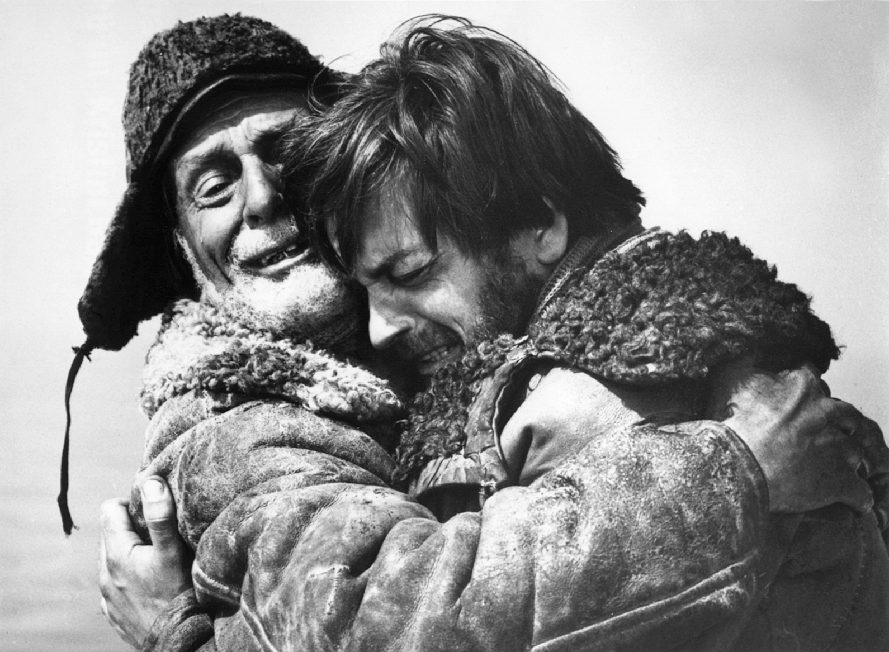
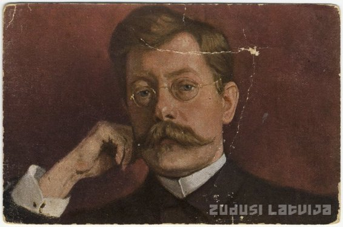
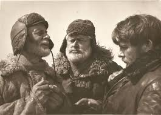
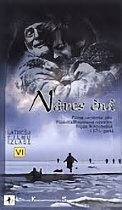

“Nāves ēnā”

“Nāves ēnā” ir viens no slavenākajiem Rūdolfa Blaumaņa darbiem.

Rūdolfs Blaumanis dzimis 1863. gada 1. janvārī Ērgļos.
Viņš bija latviešu rakstnieks, dramaturgs un žurnālists.
Miris 1908. gada 4. septembrī.
Darbība notiek jūrā uz ledus gabala.
Zvejnieki cenšas izdzīvot ļoti bīstamā situācijā nejaušības, ar domam kā tagad atnāks palīga.
Darbs uzrakstīts 19. gadsimtā.
To var saprast pēc cilvēku dzīves, smagā darba un zvejniecības.

Līderis un organizators. Palīdzēja citiem cilvēkiem.
Egoistisks personāžs. Domāja vairāk par sevi un gribēja nogalīnat citus.
Mierīgs un domīgs cilvēks.
Daži palīdz citiem, bet citi domā tikai par sevi.

“Nāves ēnā” ir ļoti slavens latviešu literatūras darbs, jo par to ir izdarijuši pat ekranizejumu.
1971. gadā tika izveidota filma.
Filma uzņemta Rīgas Kinostudijā.
Tā ir Latvijas kultūras kanonā.
Skatoties filmu, es izjutu spilgtas emocijas. Skumja, bet noderīga novēlē.